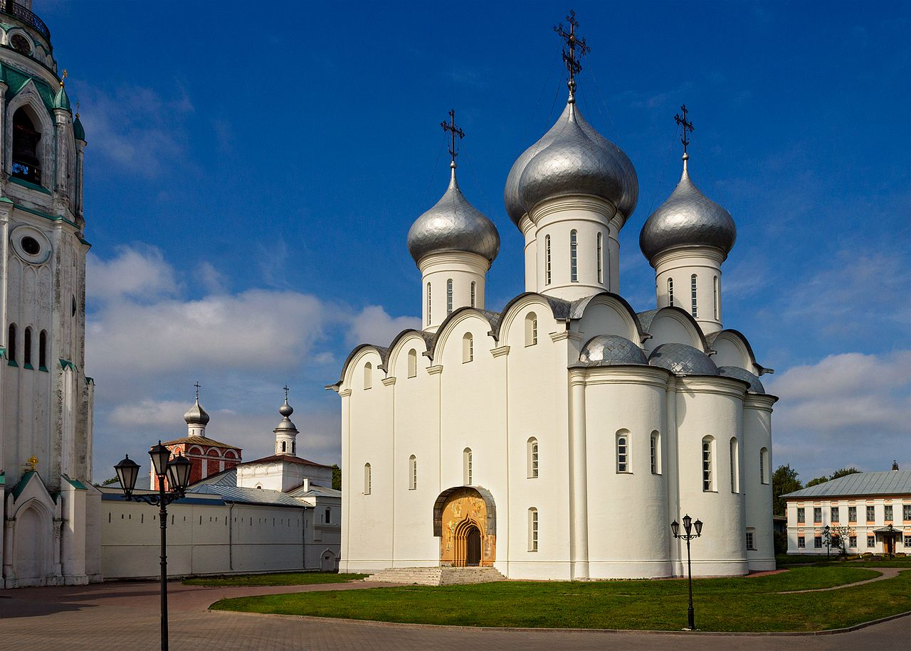
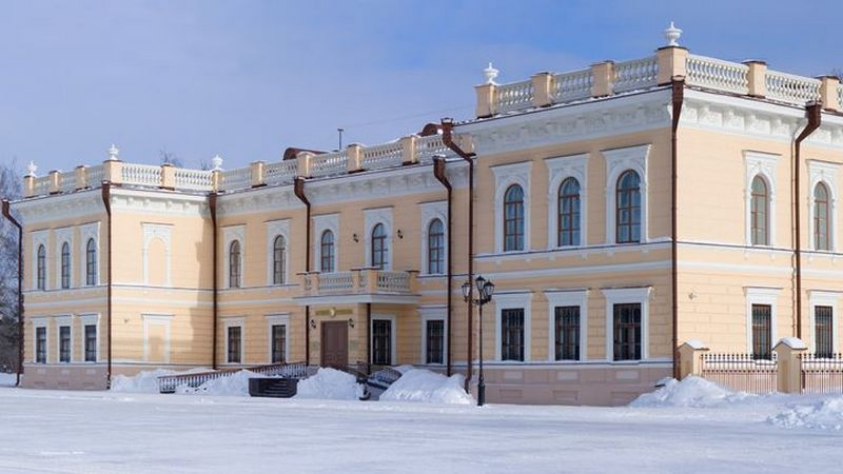
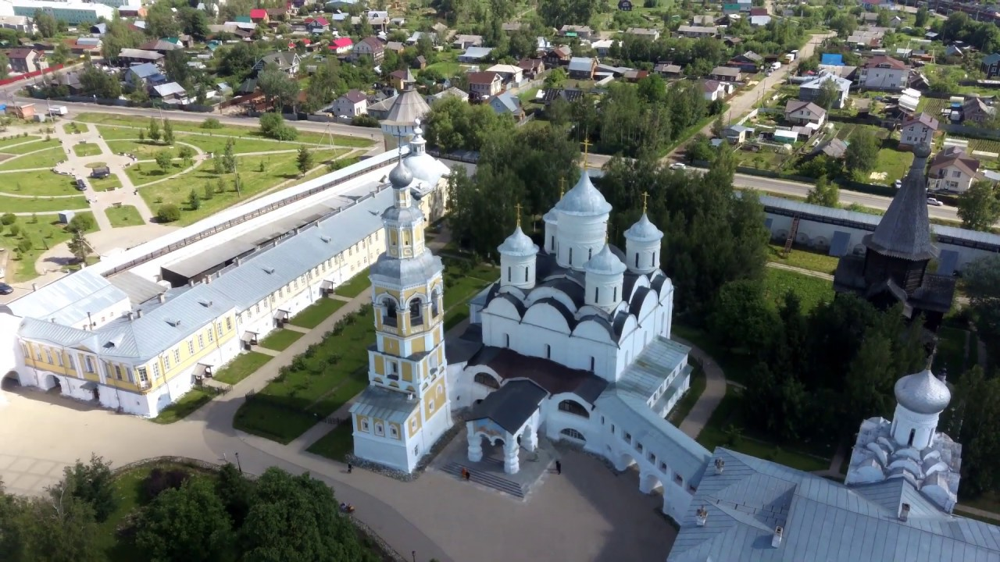
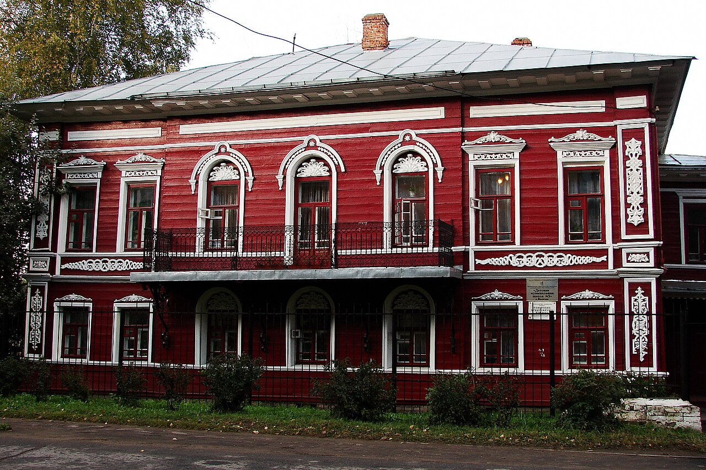
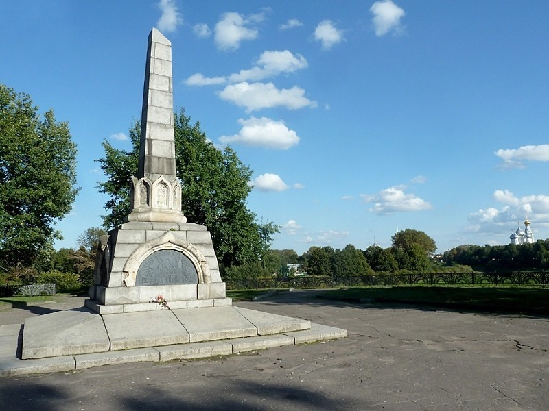
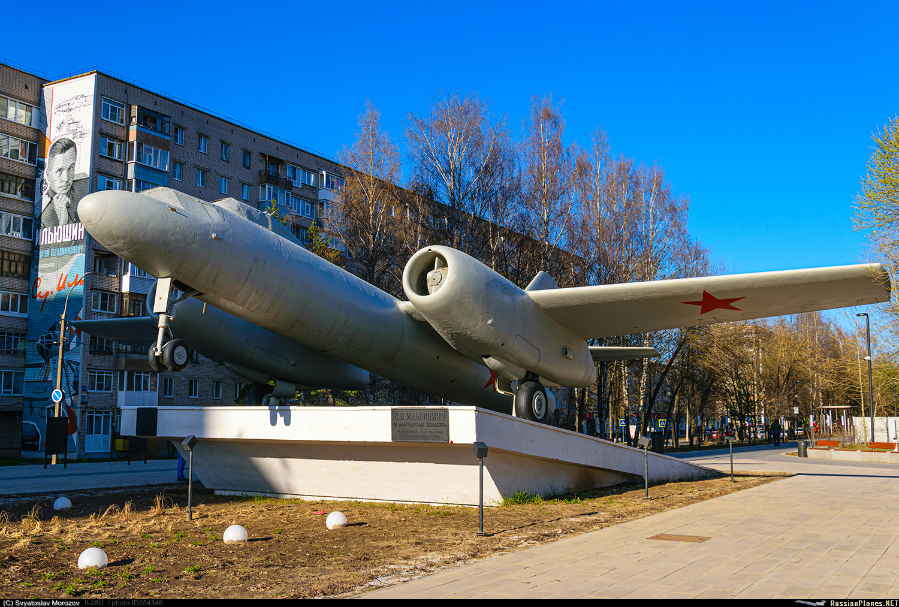

Достопримечательности Вологды
Софийский собор
Главный православный храм города, возведенный по приказу Ивана Грозного в 1568–1570 годах. По легенде, именно здесь царь получил «знамение» и покинул город.

Музей кружева
Расположен в здании бывшего Госбанка. Здесь собрана крупнейшая в России коллекция кружева — символа Вологодчины.

Спасо-Прилуцкий монастырь
Один из самых величественных ансамблей Русского Севера, основанный в 1371 году учеником Сергия Радонежского.

Деревянное зодчество
Уникальные «резные палисады» и купеческие особняки, сохранившие облик города XIX века.

Ленивая площадка
Место основания города, где сегодня возвышается монументальный памятник в честь 800-летия Вологды.

Памятник С.В. Ильюшину
Монумент великому авиаконструктору и нашему земляку, создателю знаменитых самолетов «Ил».
